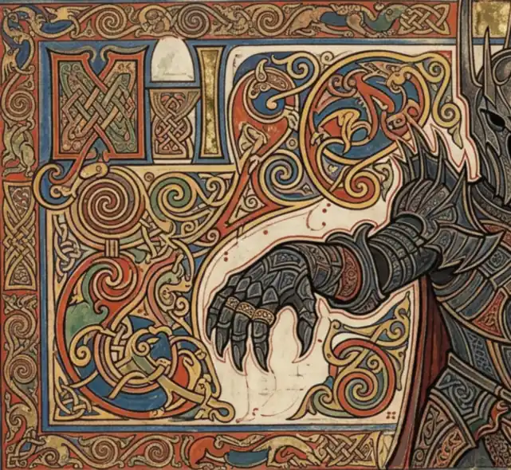
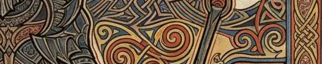
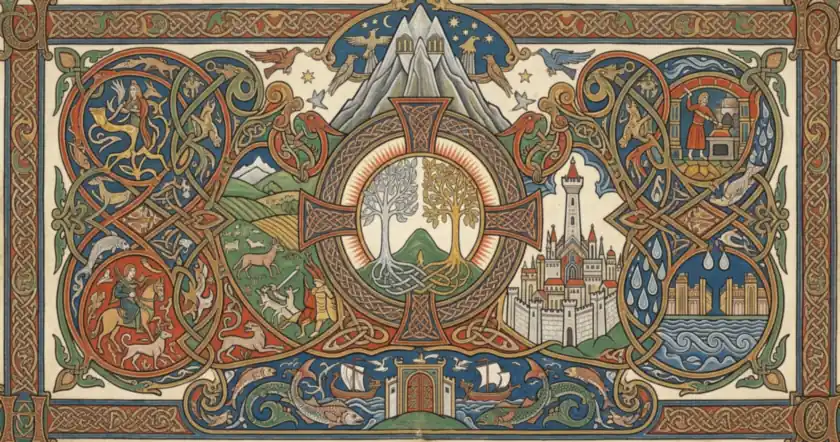
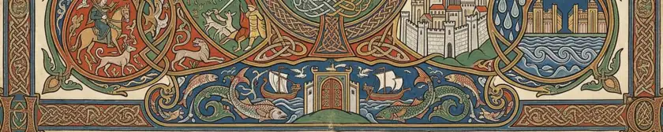
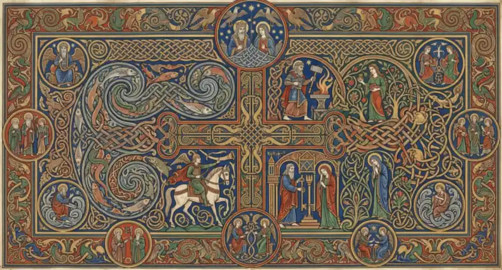
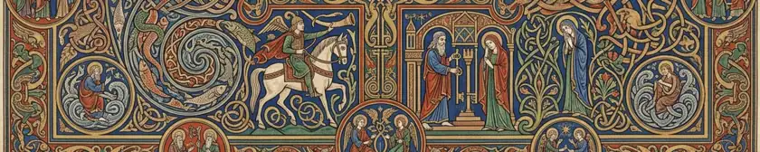

Lore and First Principles · The Lieutenant of Angbandi

The Lieutenant of Angband
SUPPLIED. The owner's plate, made with an AI tool, published on his own standing authorisation — on his word, not on a licence the file carries. The archive cropped, turned and recoloured it to this leaf. No generator is named: none was named to us. the archive's own record
A·iThe
Volume VI · The opening of this volumeii
The Lieutenant of Angband
THE ONE PLATE OF THE ELEVEN WITH A REAL FOLD -- an open book, two leaves meeting at a vertical crease, page edges curving away, on a lighter cream ground. A dark armoured crowned figure stands on the fold, right arm outstretched, left hand on a mace; a smoking mountain behind him at the right. Zoomorphic interlace to either side, red and ochre dominant. Measured trough depth 42.3 at x=758.
What the corpus attests
FIGURE INVENTED ENTIRELY. The corpus gives no description of Sauron in armour, no crown, no mace. His fair form and his shapes as wolf, serpent and vampire are attested (Silmarillion ch. 19); this armoured king is not any of them. It is the plate's invention and is published as such under C434.
Why this volume
Volume VI is Lore and First Principles -- 'what holds the world up'. The archive's account of evil is a first principle, not an episode: the Ainulindale's discord, Morgoth's marring, and the lieutenant who outlives his master are what the whole moral architecture of the legendarium rests on. This is the volume where the archive explains why there is a shadow at all.

From the same plate
SUPPLIED. The owner's plate, made with an AI tool, published on his own standing authorisation — on his word, not on a licence the file carries. The archive cropped, turned and recoloured it to this leaf. No generator is named: none was named to us. the archive's own record
A·ijContents
Lore and First Principles · Valinor, and the light of the Two Treesiii

Valinor, and the light of the Two Trees
SUPPLIED. The owner's plate, made with an AI tool, published on his own standing authorisation — on his word, not on a licence the file carries. The archive cropped, turned and recoloured it to this leaf. No generator is named: none was named to us. the archive's own record
A·iijValinor,
Volume VI · A great subject of this volumeiv
Valinor, and the light of the Two Trees
A landscape leaf: a silver and a gold tree together in a pale roundel at the centre of a knotwork cross, a twin-peaked snow mountain above with eagles and stars, a white walled city at the right, ships and sea-beasts along the foot, and framed corner scenes of a rider with hounds, a smith at a forge, fields with deer, and fountains.
What the corpus attests
THE TREES, THE MOUNTAIN AND THE CITY ARE ATTESTED; THE ROUNDEL IS THE ARCHIVE'S. The Two Trees of Valinor, Taniquetil and Tirion are Tolkien's own. The cruciform frame, the corner roundels and the arrangement of the Powers' works around the centre are this plate's, and are a medieval page-shape rather than anything the corpus describes.
Why this volume
Volume VI is Lore and First Principles -- 'what holds the world up'. The composition is built around THE TWO TREES at the crossing of a cruciform roundel, with Taniquetil above them; the city, the ships and the fields sit in the margins. The centre of a picture is what it is about, and the light of the world is a first principle, not a location. It stands in the volume where `sauron-armoured` already stands for the shadow.

From the same plate
SUPPLIED. The owner's plate, made with an AI tool, published on his own standing authorisation — on his word, not on a licence the file carries. The archive cropped, turned and recoloured it to this leaf. No generator is named: none was named to us. the archive's own record
A·ivContents
Lore and First Principles · The Valar at their officesv

The Valar at their offices
SUPPLIED. The owner's plate, made with an AI tool, published on his own standing authorisation — on his word, not on a licence the file carries. The archive cropped, turned and recoloured it to this leaf. No generator is named: none was named to us. the archive's own record
A·vThe
Volume VI · A great subject of this volumevi
The Valar at their offices
A landscape leaf about a knotwork cross: a smith hammering at a flaming anvil, a rider on a white horse with a horn, a great blue panel of interlaced fish, a woman with a tree, a hall of judgement with two standing figures, and a mourning figure in blue -- with ten small haloed roundels ranged around the border.
What the corpus attests
THE POWERS AND THEIR OFFICES ARE ATTESTED; THE FACES AND THE ARRANGEMENT ARE INVENTED. The Valar's spheres -- the smith, the hunter, the waters, the growing things, the judging of the dead, the king and queen of the stars and the airs -- are all in the corpus. NO plate in the corpus assigns a face to any of them, and the haloes, the garments and the roundel arrangement here are entirely the archive's.
Why this volume
Volume VI is Lore and First Principles. This plate is the POWERS AT THEIR WORKS -- a smith at a forge, a rider, waters full of fish, a tree, a judge's hall, two enthroned among stars. It is not a portrait gallery and it is not a place: it is the offices by which the world is kept, which is this volume's whole subject. Placing it here rather than in Volume III with `ainur.html` is a DEPARTURE from where the archive files the Ainur, and it is made deliberately: the route is about who they are, and this plate is about what they do.

From the same plate
SUPPLIED. The owner's plate, made with an AI tool, published on his own standing authorisation — on his word, not on a licence the file carries. The archive cropped, turned and recoloured it to this leaf. No generator is named: none was named to us. the archive's own record
A·vjContents
The Arda Archive · Lore and First Principlesvii
Lore and First Principles
What holds the world up. This volume opens at folio i and runs to folio xiv: 7 leaf-openings in 7 parts.